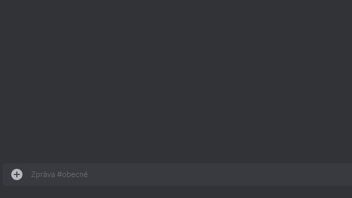
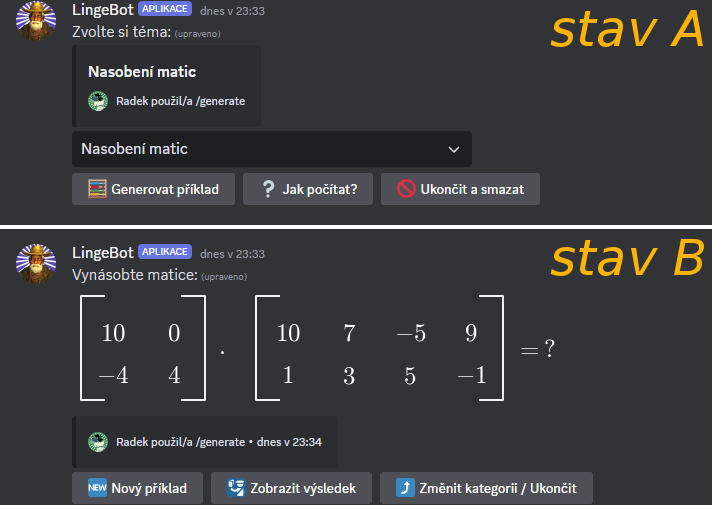

Generování příkladů
Princip příkazu /generate
Po odeslání příkazu /generate se v textovém kanálu objeví rozhraní pro generování příkladů. Nejprve se objeví výběrový seznam dostupných kategorií příkladů. Uživatel si vybere kategorii, která ho zajímá. Po zvolení kategorie si uživatel pomocí tlačítek může buď nechat vygenerovat první příklad, nebo zobrazit návod pro výpočet příkladů z dané kategorie.
Po vygenerování příkladu je zpráva upravena a obsahuje textové zadání příkladu s případným obrázkem. Uživatel může pomocí tlačítek zobrazit výsledek nebo vygenerovat nový příklad.
Návod pro vypočítání příkladu funguje na stejném principu jako výklad teorie. Zprávy s návodem jsou postupně odeslány do textového kanálu.
Pokud pro danou kategorii příkladů není návod dostupný, tlačítko pro jeho zobrazení nebude dostupné. Opačný případ, kdy je dostupný pouze návod, ale ne generace, je také možný.
Rozhraní příkazu /generate
Výběr kategorie příkladů z výběrového seznamu:

Po výběru kategorie se rozhraní přepne do stavu A:

| Tlačítko | Funkce |
|---|---|
| 🧮 Generovat příklad | Přepne do stavu B, vygeneruje a zobrazí nový příklad. |
| ❔ Jak počítat | Odešle do textového kanálu zprávy s tutoriálem pro výpočet příkladu z vybrané kategorie. |
| 📨 Uložit do DMs * | Přepošle tutoriál pro výpočet do DMs. |
| 🚫 Ukončit a smazat | Ukončí rozhraní a smaže všechny příslušné zprávy. |
| 🆕 Nový příklad | Vygeneruje a zobrazí nový příklad. |
| 🛂 Zobrazit výsledek | Zobrazí výsledek (postup) k atuálnímu příkladu. |
| ⤴️ Změnit kategorii / Ukončit | Přepne do stavu A. |
* Tlačítko se objeví pouze po použití ❔ Jak počítat pod nově odeslanými zprávami.